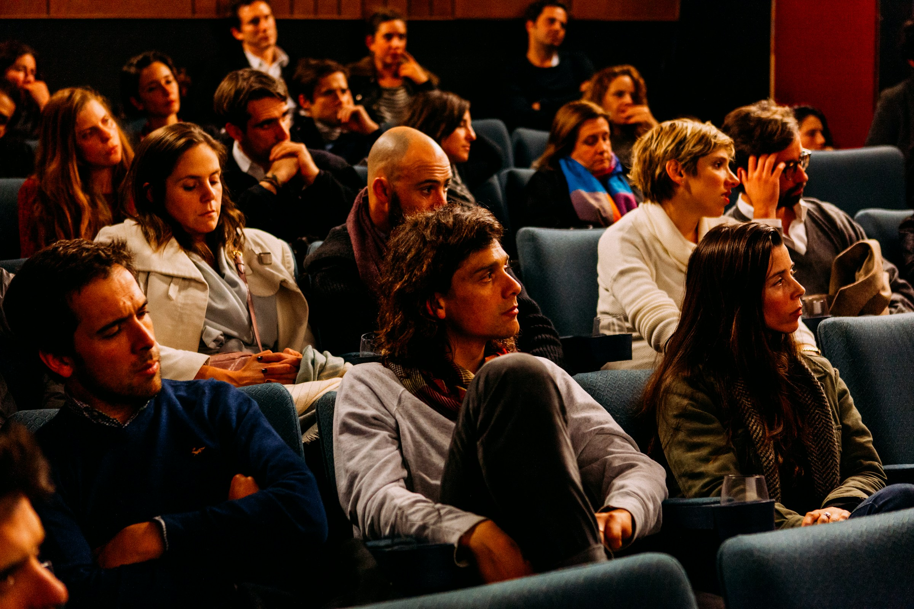

WIDE · HELD 14 s ·
the house is listening
LIVE
mic on · Riya's phone
snaps on the last line
cadence steady · 2.1 s pause before it, held on purpose
Prithvi ·
Theatre
1:48
of a 3:00 slot · poem 2 of 3
OK
end slot
Back
stop